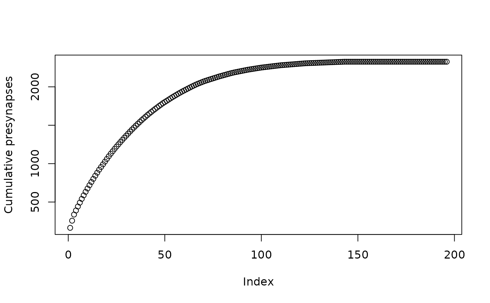
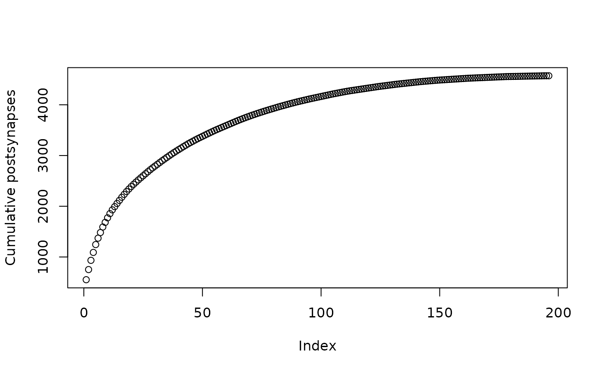

Login to MANC neuprint server
Usage
manc_neuprint(
server = getOption("malevnc.neuprint"),
dataset = getOption("malevnc.neuprint_dataset"),
token = Sys.getenv("neuprint_token"),
...
)Arguments
- server
A neuprint server (a sensible default should be chosen)
- dataset
A neuprint dataset (a sensible default should be chosen based on which dataset has been specified for Clio/DVID)
- token
neuprint authorisation token obtained e.g. from neuprint.janelia.org website.
- ...
Additional arguments passed to
neuprint_login
See also
Other manc-neuprint:
manc_connection_table(),
manc_ids()
Examples
# \donttest{
vncc=manc_neuprint()
anchorids <- neuprintr::neuprint_ids("status:Anchor", conn=vncc)
# the last connection will be used by default
anchormeta <- neuprintr::neuprint_get_meta("status:Anchor")
plot(cumsum(sort(anchormeta$pre, decreasing = TRUE)), ylab='Cumulative presynapses')

plot(cumsum(sort(anchormeta$post, decreasing = TRUE)), ylab='Cumulative postsynapses')

# }